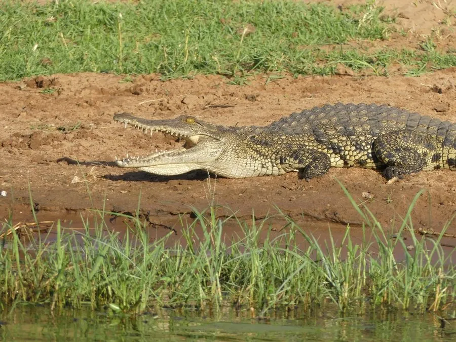

爬行动物 · 动物界
尼罗鳄 Crocodylus niloticus

非洲大陆最常见的大型鳄类，体长可逾 5 米，雌鳄会守在巢边守护卵和幼鳄，是非洲水边的顶级捕食者。
- 分类
- 门脊索动物门纲爬行纲目鳄目科鳄科属鳄属
- 栖息环境
- 非洲撒哈拉以南的河流、湖泊、水库与淡水沼泽
- 地理分布
- 非洲撒哈拉以南的大部分地区，以及马达加斯加等岛屿
- 保护级别
- IUCN 无危（LC）；非中国原产，在中国无保护级别
物种志
尼罗鳄体躯粗大，背面呈橄榄绿至暗褐色，幼体带有黑色横斑，腹面淡黄；吻部略长，四肢粗壮，尾部侧扁，背鳞厚实如铠甲。它广泛分布于非洲撒哈拉以南的河流、湖泊与沼泽，多单独或成小群活动，捕食鱼类、龟、水鸟、羚羊、斑马，也会伏击到水边饮水的哺乳动物。
尼罗鳄在旱季繁殖，雌鳄在河滩挖掘巢穴并产卵约 40–60 枚，孵化期约 80–90 天，孵化温度决定幼鳄性别；母鳄会守护巢穴，幼鳄出壳后会跟随母鳄生活数月。它曾是古埃及人敬畏的索贝克神化身，也是非洲淡水生态系统中体型最大的掠食者之一，成年雄性会以拍尾、喷气的方式宣示领地。如今部分地区的种群因皮革贸易和人鳄冲突而下降，但整体仍较稳定。
形态与习性
- 食性鱼类、龟、水鸟、羚羊、斑马及动物尸体
- 体长成年 3–5 m，个别记录超过 6 m
- 体重约 225–750 kg
- 寿命野外约 45–70 年
- 繁殖卵生，每窝 40–60 枚，孵化期 80–90 天
- 活动节律晨昏与夜间活动，白天常在水边晒背
- 威胁皮革贸易、人鳄冲突与栖息地丧失
趣味知识
- 古埃及人把尼罗鳄视为索贝克神的化身，并为其建造神庙和池塘。
- 生活在河边的埃及鸻会帮尼罗鳄啄食牙缝残渣，鳄鱼一般不会伤害它。
- 尼罗鳄的性别由巢温决定，孵化温度偏高时孵出的雄性比例更大。
生态关系
- 捕食 → 角马 鳄鱼伏击饮水角马